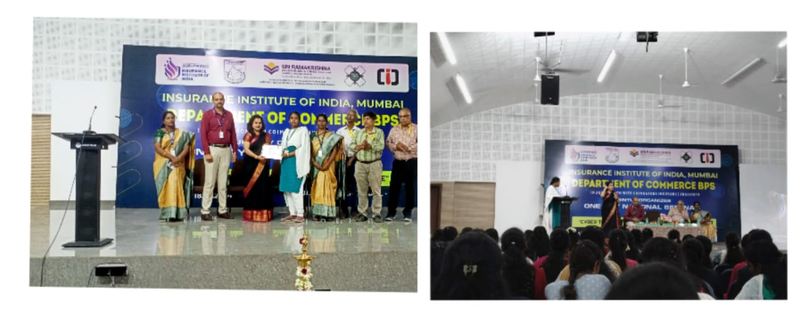
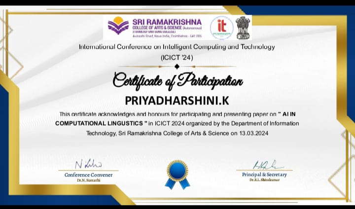
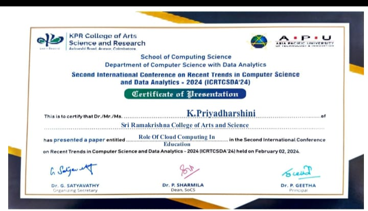
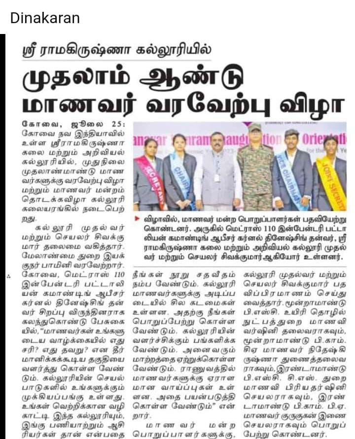
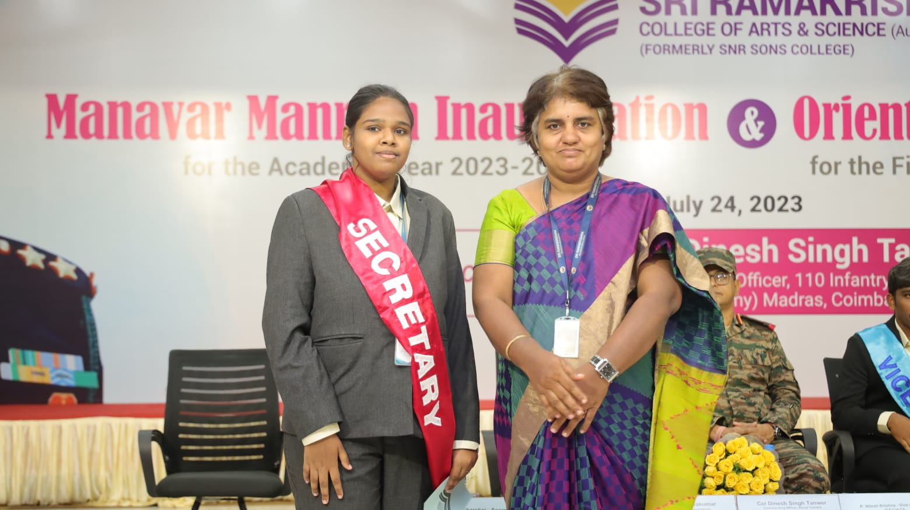

CONFERENCE AT CYBERTHREATS IN INSURANCE SECTOR
Presented a paper on "Cyber Threats in the Insurance Sector" at a conference organized by the Department of BPS at SRCAS on July 18, 2024, addressing the challenges and solutions related to cybersecurity in the insurance industry.

CONFERENCE AT SRCAS
Participated and presented a paperin a conference organized by the IT department of SRCAS on March 13, 2024, discussing "AI in Computational Linguistics" and exploring the applications and advancements of artificial intelligence in language processing.

CONFERENCE AT KPRCAS
Presented a paper on "Role of Cloud Computing in Education" at the KPRCAS conference on February 2, 2024, highlighting the impact and benefits of cloud technologies in modern education.

CONFERENCE
On OCTOBER 5 2023, I had the privilege of participating in a conference hosted by Sri Ramakrishna College of Arts and Science for Women. It was a platform that not only fostered intellectual exchange but also provided me with an opportunity to delve into a subject I am deeply passionate about.During the conference, I had the honor of presenting a paper on the "Role of Artificial Intelligence in Future Education".

BHARATHI VIZHA
I am thrilled to share that I recently participated in a speech competition held in honor of Bharathi Vizha, and it brings me great joy to announce that I secured the 2nd prize. This event, which took place on September 11, 2023, provided a platform for participants to celebrate the essence of Bharathi Vizha and articulate their thoughts on its significance. Winning the 2nd prize is not only a personal achievement but also a testament to the dedication and effort I invest in honing my public speaking skills.
YUVA SAMYAD
I had the privilege of participating in Yuva Samvad - India@2047 held at bharathiyar university on 28 july 2023 as a dedicated NSS (National Service Scheme) volunteer. The primary objective of this program was to facilitate a platform where the youth could express their thoughts and ideas regarding the five resolutions for India's development in 2047.
As an NSS volunteer, I actively engaged in discussions and shared my perspective on the key areas that can shape India's progress over the next few decades.
MAANAVAR MANDRAM INAUGURATION
I am honored to have been elected as the Secretary of Manavar Mandram (Student Union). During the inauguration ceremony of manavar mandram held on July 24 2023, I had the privilege of taking the oath of office, administered by the principal DR.B.L.shivakumar. It was a momentous occasion, marked by our Head of the Department(H.O.D) DR.V.Krishnapriya graciously presenting me with a shawl as a symbol of responsibility and leadership.


BHARATHI VIZHA
I am thrilled to share that I recently participated in a speech competition held in honor of Bharathi Vizha, and it brings me great joy to announce that I secured the 2nd prize. This event, which took place on September 11, 2023, provided a platform for participants to celebrate the essence of Bharathi Vizha and articulate their thoughts on its significance. Winning the 2nd prize is not only a personal achievement but also a testament to the dedication and effort I invest in honing my public speaking skills.
SHERO BOOK
I am elated to share that one of my proudest accomplishments is the publication of my poetry dedicated to women empowerment. This meaningful contribution has found its place in a Shero book, providing a platform for me to amplify the voices advocating for the strength, resilience, and empowerment of women.


AWS DEEPRACER
I recently had the honor of winning the first prize in our department's AWS DeepRacer competition held on March 30, 2023. This experience not only showcased my passion for cutting-edge technologies like reinforcement learning but also reinforced my commitment to continuous learning and innovation.